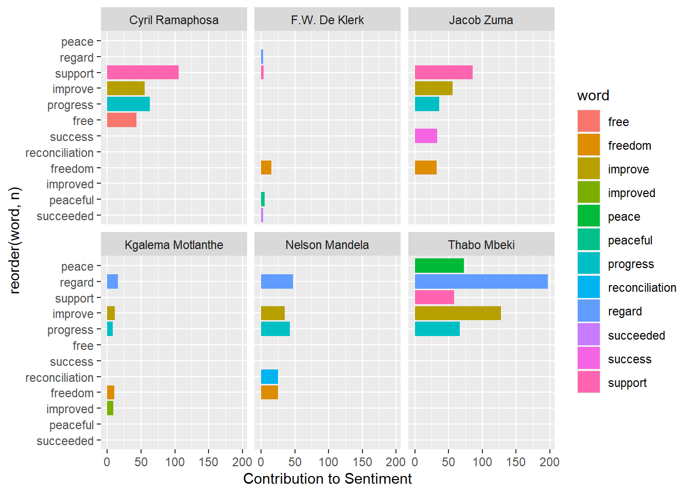
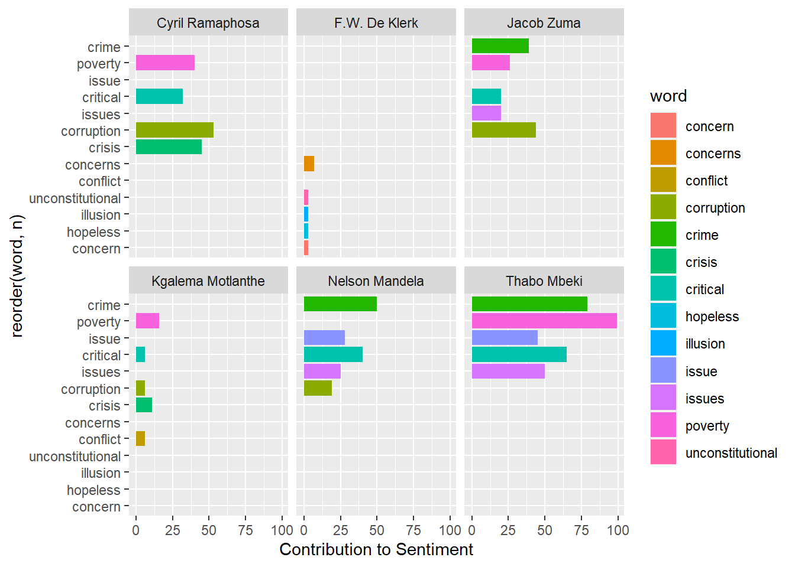
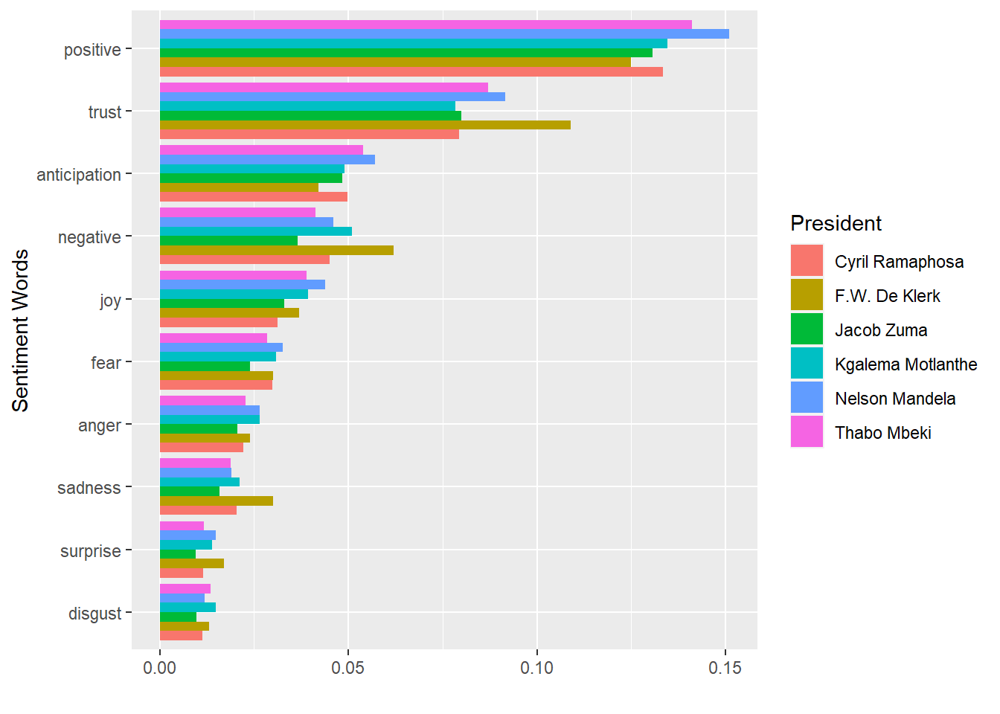

Data Science for Industry: Assignment 2
Introduction
The State of the Nation Address (SONA) in South Africa serves as an opportunity for the President to address the nation and provide an overview of the government’s accomplishments, plans, and priorities. This speech marks the opening of Parliament. It is an important political event and a key moment for the President to communicate the government’s agenda to the South African Parliament (National Assembly and National Council of Provinces) (“State of the Nation Address,” n.d.). At the SONA, the President of South Africa is able to not only inform the nation of the economic and political policies rot be carried out, but also encourage South Africans, bringing hope and inspiring confidence in government. For example, after the South African National Rugby team won the Rugby World Cup in 2019, President Cryril Ramaphosa congratulated the team on their achievement and highlighted the pride this brought to the country during his SONA at the beginning of 2020 (“State of the Nation Address,” n.d.).
Democratic governance can be seen at SONA’s, as the President exposes the problems the country is currently facing and possibly provides an account on what is being done to solve them (Eshbaugh-Soha 2010). (Banguis-Bantawig 2019) highlighted that speeches made by Asian Presidents revealed a lot of information about the state of affairs in the periods studied.
The implementation of data mining analysis techniques, such as topic modeling and sentiment analysis, allows for a more profound examination and comprehension of past State of the Nation Addresses (SONAs). Data mining offers the opportunity to gain insights into the challenges faced by previous leaders and to evaluate the ongoing relevance of these issues in contemporary contexts (Miranda and Bringula 2021)
Literature Review
Sentiment Analysis
Studies such as (Budiharto and Meiliana 2018) have suggested frameworks into using sentiment analysis on posts on relevant topics on some social media websites to predict election results. Sentiment analysis can also be used to determine the mood of the nation by monitoring announcements made by leaders of the country, including presidential candidates (Vo et al. 2017). (Bringula et al. 2023) analyzed comments on Youtube to analyze opinions from political vloggers about two presidential canditates. Sentiment analysis can be used to summarize political issues and current affairs (Bollen, Mao, and Pepe 2011). (Miranda and Bringula 2021) studied State of the Nation Addresses of 13 Philippine presidents and discovered that the speeches had huge focus towards economic development, enhancement of public services, and addressing issues faced by the nation.
Data and Methodology
Data Preprocessing
The full text of State of the Nation Address (SONA) speeches, from 1994 to 2023, was collected from the official South African Governement website. Data preprocessing is an essential phase in text analysis, aimed at transforming the raw text data into a structured format suitable for in-depth analysis of the speeches. For this we chose the ‘tidytext’ package found in R programming language which provided a versatile platform for text analysis
The initial step in data preprocessing was to identify the date of the speech and the President who addressed the nation. Following this was the removal of special characters, digits and punctuation marks. Elements, such as symbols, commas, periods, and question marks, can introduce noise into the text and hinder accurate analysis. Numerical values and digits hold limited relevance and may disrupt the analysis of textual content. Their exclusion simplifies the text, making it more text-centric.
To extract meaningful information from the text, tokenization is employed. It involves breaking down the continuous string of text into individual units, known as tokens, usually words or phrases. Tokenization provides the foundation for understanding the text’s structure and content, making it more amenable to analysis. All the characters in the text are converted to lower case. This ensures that the analysis is not case sensitive. Stop words, commonly occurring words that hold not much meaning, are removed: shifting the focus to content-carrying words, enhancing the identification of significant themes and patterns in the SONA speeches.
Sentiment Analysis
The aim of the sentiment analysis is to determine the emotional tonality expressed in the State of the Nation Address. At the core of this sentiment analysis lies the sentiment lexicon—a dictionary that associates words or phrases with sentiment scores. In this paper, three different lexicons found in the ‘tidyr’ package were used: AFINN, bing and nrc. The AFINN lexicon assigns a score to each word in the topic with -5 being the most negative and 5 being the most postive score.The bing lexicon assigns each word in the tolkenized speeches as either negative or positive according to the lexicon association. The nrc lexicon assigns each word in the tolkenized speeches into categories of positive, negative, anger, anticipation, disgust, fear, joy, sadness, surprise, and trust.
Results
Sentiment Analysis


We can see from Figure Figure 1 that positive words such as ‘reconciliation’, ‘freedom’, ‘progress’, and ‘improve’ were commonly occurring in speeches made by Nelson Mandela. The word occurence of ‘support’ in the speeches seems to be increasing as we move towards the most recent president, Cyril Ramaphosa.
Figure Figure 2 shows that most negative words used in each of the presidents. This may highlight some of the issues each president had experienced during their tenure. ‘Crime’ seems to be a word with one of the most commonly occurring in speeches made by Nelson Mandela, Thabo Mbeki, and Jacob Zuma. ‘Poverty’ is the most occuring negative word in Thabo Mbeki’s speeches and also significant in Jacob Zuma’s, and Cyril Ramaphosa’s speeches.

Figure Figure 3 indicates the proportion of sentiment words, categorized using the nrc lexicon, for each of the presidents. Nelson Mandela’s speeches have the highest proportion of positive sentiment while De Klerk’s speeches have the the highest negative sentiment. Nelson Mandela’s speeches have a relatively high proportion of words associated with anticipation, and fear, but also of joy and trust.

Figure Figure 4 shows a time series plot provides an overview of how sentiments have evolved over the years in the SONA speeches. There is a major spike in postive sentiment in Thabo Mbeke’s address in May 2004 right after his re-election on 14th April 2004. This is followed by a lower average sentiment score for the rest of Mbeki’s State of the Nation Addresses for the his second tenure. There was also a sharp decline in Jacob Zuma’s SONA on 14th February 2003. Since Ramaphosa’s time in office there has been an overall decline in the average sentiment score of the SONA each with the address in February 2022 having the lowest sentiment score since 1994.